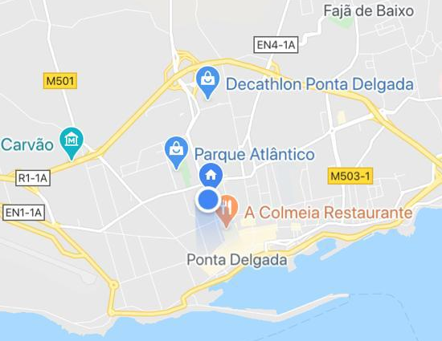

Higor Neto - Áureos Fotografia
GALERIA


Contactos

YOUTUBE
FACEBOOK
LINKEDIN
higoron@hotmiail.com
SOBRE
Higor Neto é estudante de Informatica - Redes e Multimédia na Universidade dos Açores.
Desde 2008 tem seu selo Áureos Fotografia, no mesmo ano em que concluiu o curso de fotografia no SENAC.
Músico: Estuda piano desde 9 anos de idade, aos 16 começou a estudar Guitarra Acústica.
Poeta: A vinte anos escreve poesias e letras para músicas. Aos 22 anos escreve seu primeiro Conto:Reino Cosmogónico.
Produtor Fonográfico:Profissional certificado em Pro Tools desde 2007 mesmo ano onde cria seu Home Studio,
fazendo Gravação e Edição de áudio.